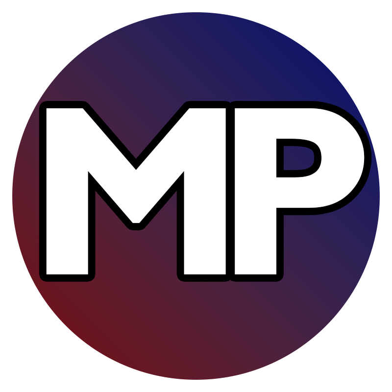

Chat, together
Read an arrival-ordered conversation and send your own messages to Twitch, YouTube, or both. Platform identity, filters, and appearance controls keep the feed readable.

MostlyPositiveMP MultiChatNative Windows plugin · OBS Studio
MP MultiChat brings Twitch and YouTube chat into one native OBS dock, with a separate Activity Feed for supported channel and livestream events.
MP means MostlyPositive. This is the project's information and privacy website, not an online chat service or sign-in portal.
Read the privacy policyRead an arrival-ordered conversation and send your own messages to Twitch, YouTube, or both. Platform identity, filters, and appearance controls keep the feed readable.
See supported follows, subscriptions, memberships, gifts, and other platform events without duplicating ordinary chat into the Activity Feed. Availability depends on the platform and channel.
The plugin connects from OBS to official platform services. No MP account, developer-operated authentication relay, or subscription is required. Saved account credentials are protected locally by Windows.
MP MultiChat uses YouTube API Services to identify the channel you authorize, find its active livestream, receive live chat and supported activity, send the messages you compose, show available public profiles, and perform supported moderation actions you explicitly confirm.
Optional public-subscriber monitoring samples recent public subscriptions while OBS is running, even without a livestream. This is delayed, incomplete snapshot monitoring—not guaranteed real-time subscription delivery. Private subscribers are not exposed. Livestream-only activity still needs an active chat.
Google sign-in takes place in your browser. The requested YouTube permission is youtube.force-ssl; Google's consent description is broader than the plugin's chat-oriented features. This website never asks you to enter Google passwords, client secrets, or tokens.
The privacy policy explains accessed data, local storage, retention, sharing, and how to revoke access or delete saved information.
Use of MP MultiChat's YouTube features is subject to the YouTube Terms of Service. By using these features, you agree to be bound by those terms. Google's own data practices are described in the Google Privacy Policy.
MP MultiChat is an independent MostlyPositive project, not a product endorsed by OBS, Twitch, Google, or YouTube.
For project or privacy questions, contact mostlypositive-dev through the website repository's Issues page. Issues are public: do not post credentials, private account data, or unredacted logs.